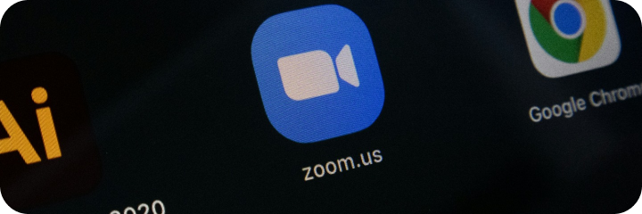

7 Team
Collaboration
Tools for Remote
Teams
Remote work is becoming more common, with studies showing over 25% of employees now work from home at least part of the time. While remote work offers many advantages like flexibility and increased productivity, it also presents some challenges - especially when it comes to team collaboration and communication.

Jensen Turner Cowork Founder
7 min read
When you have team members spread across different locations, it's crucial to have the right tools to keep everyone
coordinated and projects running smoothly. From video conferencing
to file sharing, the technology you use can make or
break your remote team's ability to work together effectively.
To help you build that vital virtual bridge, here are 7 essential team collaboration tools for remote workers:
Video Conferencing: Zoom
When you can't meet face-to-face, video conferencing is the next best thing. Zoom has emerged as one of the most popular and user-friendly options. In addition to HD video calls, it offers screen sharing, recording capabilities, and integrations with other apps. Use it for virtual meetings, team check-ins, or even virtual co-working sessions.
Project Management: Trello

For streamlining project management, Trello is a simple and visual tool. Its card-based kanban boards allow you to create task lists, assign items to team members, set due dates, attach files, and more. The ability to easily see each project's status and quickly drag-and-drop tasks makes it ideal for remote teams.
File Storage & Collaboration: Google Drive

Having a centralized place to store and collaborate on documents, spreadsheets, and other files is vital when working remotely. Google Drive provides cloud storage and its suite of productivity apps integrates real-time co-editing so multiple team members can work on the same file simultaneously.
Team Communication: Slack
Efficient team communication is crucial for remote teams, which makes Slack one of the most valuable collaboration tools. This messaging app allows you to organize conversations into dedicated channels, share files, leverage integrations with other apps, and quickly get in touch whether it's for group discussions or one-on-one chats.
Work Management: Asana
Projects can easily get derailed when teams aren't properly aligned on responsibilities, deadlines, and milestones. Asana is a work management platform designed to solve this issue. You can create projects and tasks, assign owners, set due dates, add attachments, and see projects through multiple views like timeline, calendar, or kanban boards.
Video Messaging: Loom
Sometimes explaining things over video is much easier than trying to put it into words. Loom is a video messaging tool that lets you record your screen, voice, and face. Use it to create quick tutorials, give feedback on designs, explain complex tasks, or just more personally connect with remote colleagues.
Audio Enhancement: Krisp
For remote workers without a professional recording setup, background noise can be an issue on video calls. Krisp is an AI-powered app that silences ambient sound and clears up audio so you always sound professional. It even has a mode to remove noise from pre-recorded audio files.
The right collaboration tools help remote teams work as a synced unit rather than just scattered individuals. Implement a virtual toolbox like the options listed above and you'll go a long way towards driving productivity and effective teamwork for your remote or distributed workforce.
Other Blog Posts
You May Also Like
7 min read
Navigating the Future: Trends in Modern Coworking Spaces
5 min read
Mastering Productivity: Tips from Cowork's High Achievers
10 min read
Tech Talk: The Backbone of Cowork's Seamless Experience
Seize  The Moment
The Moment
Join Cowork Today!
Uncover the transformative power of Cowork as echoed by those who've made it their professional haven. This is more than finding a desk; it's discovering a community that fuels your journey to success.
Join our newsletter to stay up to date on features and releases.
By subscribing you agree to with our Privacy Policy and provide consent to receive updates from our company.